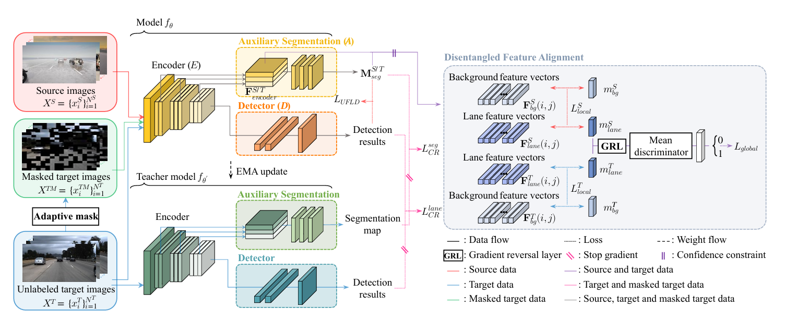

This paper addresses the domain gap between simulation and real-world data in lane detection. By introducing context-aware disentangled feature alignment, the work aims to improve unsupervised domain adaptation performance and make lane detection models more effective in practical driving environments.

The main motivation of this paper is that models trained in simulation often struggle to maintain performance when transferred to real-world driving data. In lane detection, this sim-to-real gap can make practical deployment difficult, even when synthetic data is abundant and convenient for training.
To address this challenge, the paper explores unsupervised domain adaptation with a focus on feature disentanglement and context-aware alignment. The goal is to better preserve task-relevant lane information while reducing the mismatch between synthetic and real domains.